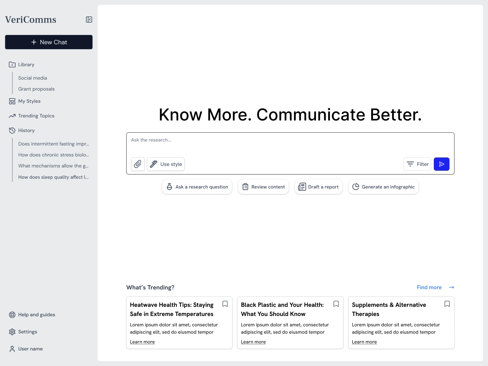
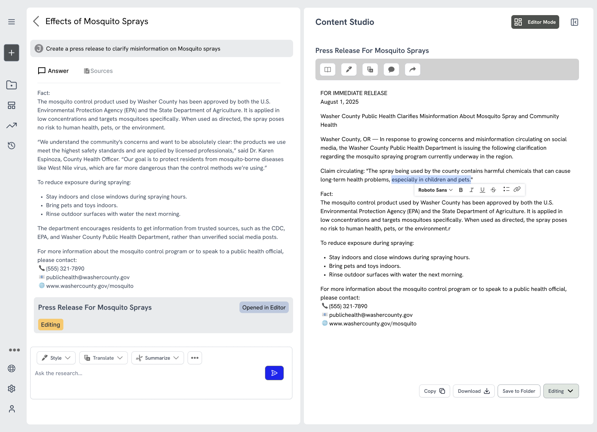
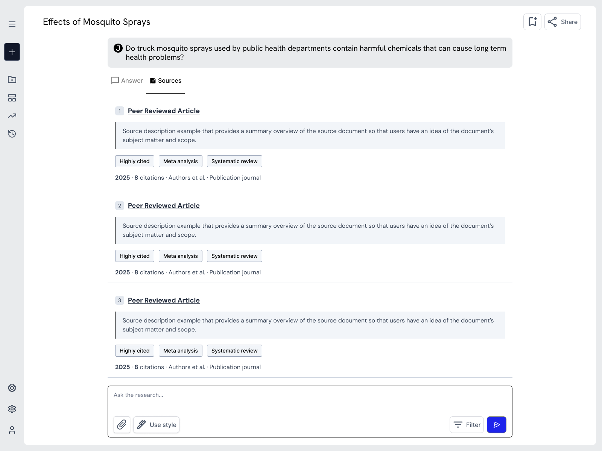

VeriComms
Science to People is building VeriComms, a purpose-built LLM platform designed to maximize the impact of public health communicators working under tight deadlines and budgets. Functioning as a content assistant and trusted thought partner, VeriComms enables the production of high-quality, science-based messaging in a fraction of the time. By combining a domain-specific architecture grounded in vetted medical sources and human-in-the-loop safeguards, this tool ensures that teams can scale their output rapidly without sacrificing scientific integrity or trust.
I operated as the lead Solutions Architect and embedded technical partner, influencing system-level decisions that informed deliverables across multiple teams.
My insight ensured that architectural considerations were accounted for at every stage, creating a solid foundation for successful MVP.
I provided holistic QA and system modeling, ensuring the product remained viable despite developer-side blockers.


Contributions and Key Insights:
- Bridged the knowledge gap for UX/Product teams by translating the developer tech stack and machine learning processes, enabling them to design features that better leverage impact.
- Advised against generative imagery to maintain scientific accuracy, prevent misinformation, and uphold product credibility.
- Supported UX research via data collection and provided multidisciplinary feedback on prototype design and functionality.
Outcomes:
- Founder leveraged our user persona and market positioning insights to strengthen their narrative, directly supporting conversations with funders and institutional partners.
- Utilization of journey mapping and a high-fidelity prototype streamlined the feature prioritization and provided actionable UX recommendations for the current development build.
- Validated hypothesis that communicators seek AI to simplify science documentation rather than replace creativity, serving as the central pillar of their product strategy.
